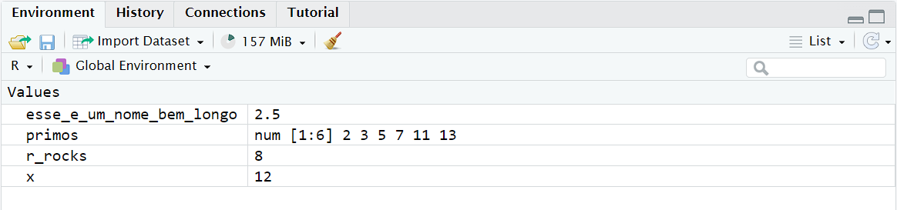

1 / 200 * 30
#> [1] 0.15
(59 + 73 + 2) / 3
#> [1] 44.66667
sin(pi / 2)
#> [1] 12 Fluxo de Trabalho: básico
Você agora tem alguma experiência em executar código em R. Não lhe demos muitos detalhes, mas você obviamente descobriu o básico, ou teria se frustrado e jogado este livro fora! Frustração é natural quando você começa a programar em R porque ele é muito rigoroso com a pontuação, e mesmo um caractere fora do lugar pode fazer com que ele reclame. Mas, embora você deva esperar um pouco de frustração, tenha em mente que essa experiência é normal e temporária: acontece com todo mundo, e a única maneira de superá-la é continuar tentando.
Antes de irmos mais longe, vamos garantir que você tenha uma base sólida na execução de código em R e que conheça alguns dos recursos mais úteis do RStudio.
2.1 Princípios básicos de programação
Vamos revisar alguns conceitos básicos que omitimos até agora, no interesse de fazer você plotar gráficos o mais rápido possível. Você pode usar o R para fazer cálculos matemáticos básicos:
Você pode criar novos objetos com o operador de atribuição <-:
x <- 3 * 4Note que o valor de x não é impresso, ele é apenas armazenado. Se você quiser ver o valor, digite x no console.
Você pode combinar vários elementos em um vetor com c():
primos <- c(2, 3, 5, 7, 11, 13)E a aritmética básica em vetores é aplicada a cada elemento do vetor:
primos * 2
#> [1] 4 6 10 14 22 26
primos - 1
#> [1] 1 2 4 6 10 12Todos os comandos em R onde que você cria objetos, comandos de atribuição, têm a mesma forma:
nome_objeto <- valorQuando ler esse código, diga “nome do objeto recebe valor” na sua cabeça.
Você fará muitas atribuições, e <- não é simples de digitar. Você pode economizar algum tempo com o atalho do teclado do RStudio: Alt + - (o sinal de menos). Observe que o RStudio automaticamente coloca espaços em torno de <-, o que é uma boa prática de formatação de código. Ler código pode ser desafiador até mesmo nos seus melhores dias, então dê um descanso para seus olhos e utilize espaços.
2.2 Comentários
O R ignorará qualquer texto após # em uma linha. Isso permite que você escreva comentários, que são textos que são ignorados pelo R, mas que podem ser lidos por outros humanos. Às vezes, incluiremos comentários nos exemplos explicando o que está acontecendo com o código.
Comentários podem ser úteis para descrever brevemente o que o código a seguir faz.
# cria um vetor de números primos
primos <- c(2, 3, 5, 7, 11, 13)
# multiplica primos por 2
primos * 2
#> [1] 4 6 10 14 22 26Em pequenos trechos de código como este, deixar um comentário para cada linha de código pode não ser necessário. Mas, à medida que o código que você está escrevendo fica mais complexo, os comentários podem economizar muito tempo seu (e das pessoas que colaboram com você) para descobrir o que foi feito no código.
Use comentários para explicar o porquê do seu código, não o como ou o o quê. O o quê e o como do seu código são sempre possíveis de descobrir lendo-os cuidadosamente, mesmo que isso possa ser chato. Se você descrever cada etapa nos comentários e, em seguida alterar o código, terá que se lembrar de atualizar os comentários também, caso contrário, será confuso quando você retornar ao seu código no futuro.
Descobrir por que algo foi feito é muito mais difícil, senão impossível. Por exemplo, geom_smooth() tem um argumento chamado span, que controla a suavidade da curva (smoothness), com valores maiores produzindo uma curva mais suave. Suponha que você decida alterar o valor de span de seu padrão de 0.75 para 0.9: é fácil para alguém que está lendo no futuro entender o que está acontecendo, mas a menos que você anote seu pensamento em um comentário, ninguém entenderá o por que de você ter alterado o padrão.
Para código de análise de dados, use comentários para explicar sua abordagem estratégica e registrar informações importantes à medida que as encontrar. Não há como recuperar esse conhecimento do próprio código sem comentários.
2.3 A importância dos nomes
Nomes de objetos devem começar com uma letra e só podem conter letras, números, _ e .. Você quer que os nomes dos seus objetos sejam descritivos, então você precisará adotar uma convenção para várias palavras. Recomendamos snake_case, onde você separa palavras minúsculas com _.
eu_uso_snake_case
outrasPessoasUsamCamelCase
algumas.pessoas.usam.pontos
E_aLgumas.Pessoas_nAoUsamConvencaoVamos voltar aos nomes quando discutirmos o estilo de código no ?sec-workflow-style.
Você pode ver o conteúdo de um objeto (chamaremos isso de inspecionar) digitando seu nome:
x
#> [1] 12Fazendo outra atribuição:
esse_e_um_nome_bem_longo <- 2.5Para inspecionar esse objeto, experimente o recurso de autocompletar (autocomplete) do RStudio: digite “esse”, pressione TAB, adicione caracteres até ter um prefixo único e pressione enter.
Vamos supor que você cometeu um erro e que o valor de esse_e_um_nome_bem_longo deveria ser 3.5, não 2.5. Você pode usar outro atalho de teclado para te ajudar a corrigi-lo. Por exemplo, você pode pressionar ↑ para recuperar o último comando que você digitou e editá-lo. Ou, digite “esse” e pressione Cmd/Ctrl + ↑ para listar todos os comandos que você digitou que começam com essas letras. Use as setas para navegar e, em seguida, pressione enter para digitar novamente o comando. Altere 2.5 para 3.5 e execute novamente.
Fazendo mais uma atribuição:
r_rocks <- 2^3Vamos tentar inspecioná-lo:
r_rock
#> Error: object 'r_rock' not found
R_rocks
#> Error: object 'R_rocks' not foundIsso ilustra o contrato implícito entre você e o R: o R fará os cálculos chatos para você, mas em troca, você deve ser escrever suas instruções de forma precisa. Se não, você provavelmente receberá um erro que diz que o objeto que você está procurando não foi encontrado. Erros de digitação importam; o R não pode ler sua mente e dizer: “ah, você provavelmente quis dizer r_rocks quando digitou r_rock”. A caixa alta (letras maiúsculas) importa; da mesma forma, o R não pode ler sua mente e dizer: “ah, você provavelmente quis dizer r_rocks quando digitou R_rocks”.
2.4 Chamando funções
O R tem uma grande coleção de funções embutidas que são chamadas assim:
nome_da_funcao(argumento1 = valor1, argumento2 = valor2, ...)Vamos tentar usar seq(), que faz sequências regulares de números, e enquanto fazemos nisso, vamos aprender mais sobre os recursos do RStudio. Digite se e pressione TAB. Uma janela pop-up mostra as possíveis formas de completar o código. Especifique seq() digitando mais (um q) para especificar ou usando as setas ↑/↓ para selecionar. Observe a janelinha que aparece, mostrando os argumentos e o objetivo da função. Se você quiser mais ajuda, pressione F1 para obter todos os detalhes no painel ajuda (Help) na parte inferior direita.
Quando você selecionar a função que deseja, pressione TAB novamente. O RStudio adicionará os parênteses de abertura (() e fechamento ()) correspondentes para você automaticamente. Digite o nome do primeiro argumento, from, e defina-o como 1. Em seguida, digite o nome do segundo argumento, to, e defina-o como 10. Por último, pressione enter.
seq(from = 1, to = 10)
#> [1] 1 2 3 4 5 6 7 8 9 10Normalmente omitimos os nomes dos primeiros argumentos em chamadas de função, assim podemos reescrever isso da seguinte forma:
seq(1, 10)
#> [1] 1 2 3 4 5 6 7 8 9 10Digite o código a seguir e veja que o RStudio fornece assistência semelhante com as aspas em pares:
x <- "olá mundo"As aspas e parênteses devem sempre vir em pares. O RStudio faz o melhor para te ajudar, mas ainda é possível cometer um erro e acabar com aspas não fechadas. Se isso acontecer, o console do R mostrará o caractere de continuação “+”:
> x <- "olá
+O + indica que o R está esperando mais alguma entrada (input); ele acha que você ainda não terminou de digitar. Normalmente, isso significa que você esqueceu de adicionar um " ou um ). Adicione o par que está faltando ou pressione ESCAPE (ou ESC) para cancelar a expressão e tentar novamente.
Observe que o painel ambiente (Environment) no painel superior direito exibe todos os objetos que você criou:

2.5 Exercícios
-
Por que esse código não funciona?
minha_variavel <- 10 minha_variavel #> [1] 10Olhe com atenção! (Isso pode parecer um exercício sem sentido, mas treinar seu cérebro para notar até a menor diferença valerá a pena quando você estiver programando.)
-
Altere cada um dos seguintes comandos R para que eles sejam executados corretamente:
libary(todyverse) libary(dados) ggplot(dTA = milhas) + geom_point(maping = aes(x = cilindrada y = rodovia)) + geom_smooth(method = "lm) Pressione Option + Shift + K / Alt + Shift + K. O que acontece? Como você pode chegar ao mesmo lugar usando os menus?
-
Vamos revisitar um exercício da Seção 1.6. Rode as seguintes linhas de código. Qual dos dois gráficos é salvo como
mpg-plot.png? Por quê?meu_grafico_de_barras <- ggplot(milhas, aes(x = classe)) + geom_bar() meu_grafico_de_dispersao <- ggplot(milhas, aes(x = cidade, y = rodovia)) + geom_point() ggsave(filename = "milhas-plot.png", plot = meu_grafico_de_barras)
2.6 Sumário
Nesse capítulo você aprendeu um pouco mais sobre como o código R funciona e algumas dicas para te ajudar a entender seu código quando você voltar a ele no futuro. No próximo capítulo, continuaremos sua jornada de ciência de dados, ensinando-o sobre o dplyr, o pacote tidyverse que ajuda você a transformar dados, seja selecionando variáveis importantes, filtrando as linhas de interesse ou calculando estatísticas resumidas.